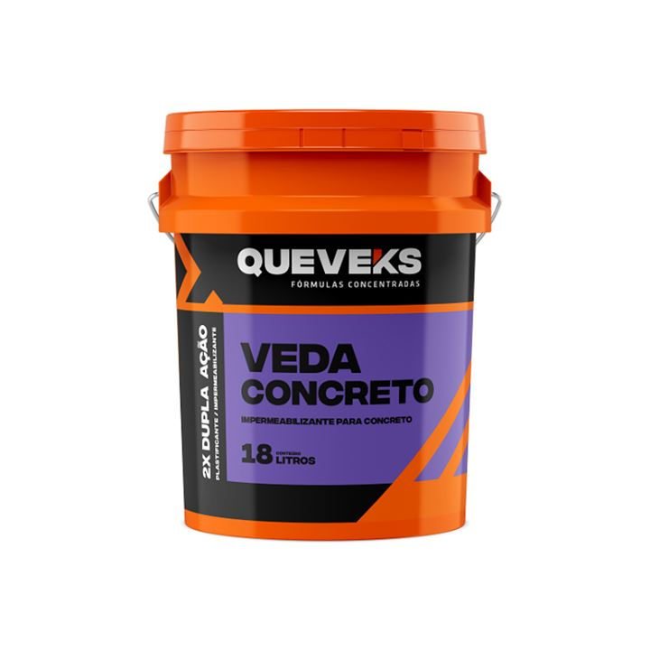
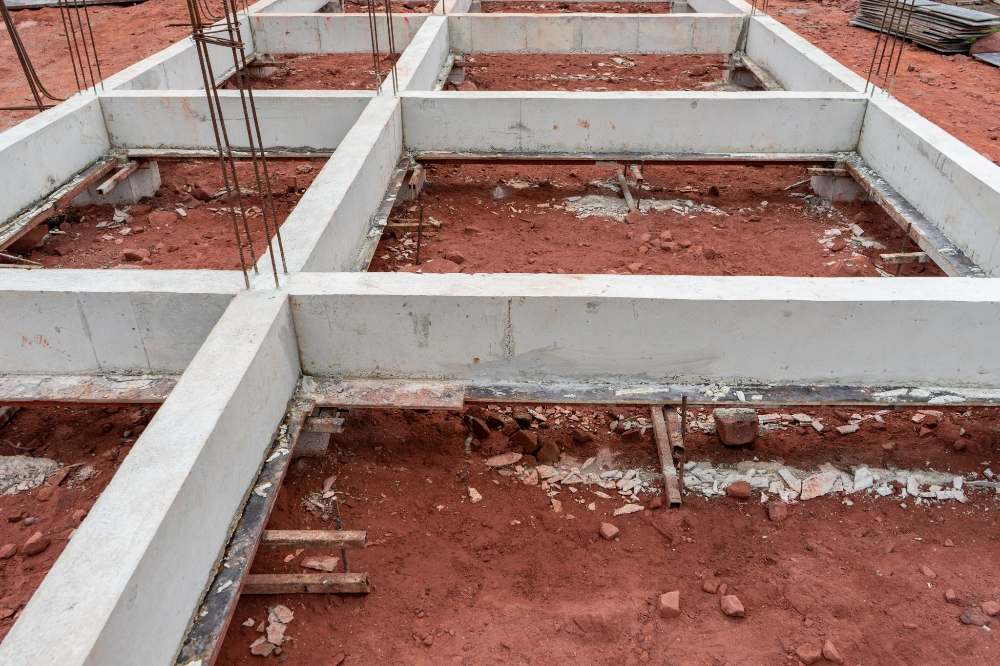

Impermeabilizante líquido que vai dentro da massa do concreto. Fecha os poros do concreto (hidrofugação) e barra a umidade, sem perder resistência.

100 ml de Veda Concreto para cada saco de 50 kg de cimento (ou 50 ml por lata de 18 L).
